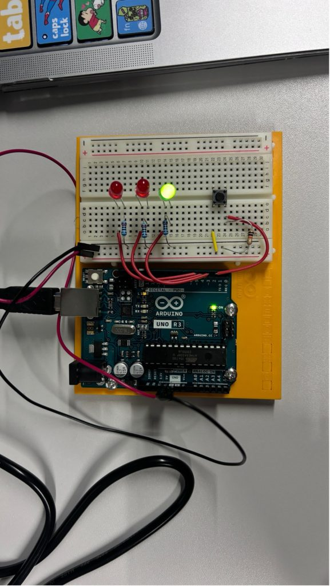

I chose this Arduino project because it combines my love for science fiction and electronics. The idea of creating a control panel reminiscent of a 1970s science fiction movie spaceship interface is both nostalgic and exciting. It allows me to bring a piece of my favourite genre to life through hands-on engineering.

To expand this project into a creative endeavour, there are several directions I could take. Firstly, I could add more switches and LEDs to create a more complex control panel with multiple functions. For example, I could add switches for different weapons systems or navigation controls. I could also incorporate sensors to make the interface more interactive. For instance, a motion sensor could trigger a certain action when someone moves near the control panel.
Another way to expand the project would be to improve the aesthetics. I could design a custom enclosure for the control panel to make it look more like a genuine spaceship component. This could involve using materials like metal or acrylic and adding details such as buttons with engraved labels.
In terms of functionality, I could program different light patterns and sequences for the LEDs. Instead of just blinking, the lights could pulse, fade in and out, or change colour based on different events. I could also add sound effects to enhance the experience. For example, when a button is pressed, a sound could play to simulate the activation of a system.
Furthermore, I could connect the Arduino to other devices or platforms. For instance, I could use it to control a small model spaceship or interact with a virtual reality environment. This would take the project to a whole new level of interactivity and creativity.